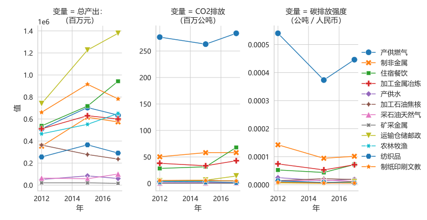
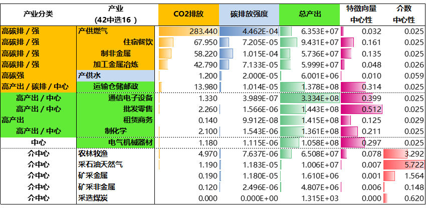

广东2012-2017投入产出结构之系列可视化
广东要如何产业低碳发展？想一目瞭然广东各产业的投入产出关系，并查看其碳排量？以下广东2012-2017投入产出网络图的可视化，可供交互（试试拖拉及鼠标悬停效果）。
广东2012-2017投入产出结构图结合各碳排放量之系列可视化
广东2012-2017投入产出结构图结合各碳排放量之系列可视化
廖汉腾. (2022). 广东2012-2017投入产出结构之系列可视化. Oxford Roadmapping 澳恪森数智科技服务(广州)有限公司.
注：此图将正式发表，在发表前请勿引用。
广东2012-2017投入产出结构图结合各碳排放量之系列可视化
展示出这几年广东的变及不变：
- 持续不变的核心产业：产供燃气、住宿餐饮、运输仓储邮政、通信电子设备、电气机械器材、制化学、批发零售、房地产等
-
新兴的核心产业：科学研究、技术服务等走向中心
广东2015、2012、2017年各排名靠前产业走势图－总产出与碳排
CEADs多区域投入产出表数据具有碳排数据，且含的3年数据均为实际非预估，可以提供趋势洞见如下图。

广东2017年产业碳排、结构网络计量交叉可视化分析
应用数据科学分析方法，澳恪森数智科技服务并一步提炼出以下广东产业碳排、结构网络计量交叉可视化，分析出高碳排/强度产业（如产供燃气及住宿餐饮）、高产出产业（如通信电子设备、批发零售、租赁商务等）、以及高介中心产业（如农林牧渔及采石油天然气）共16项重点产业。
